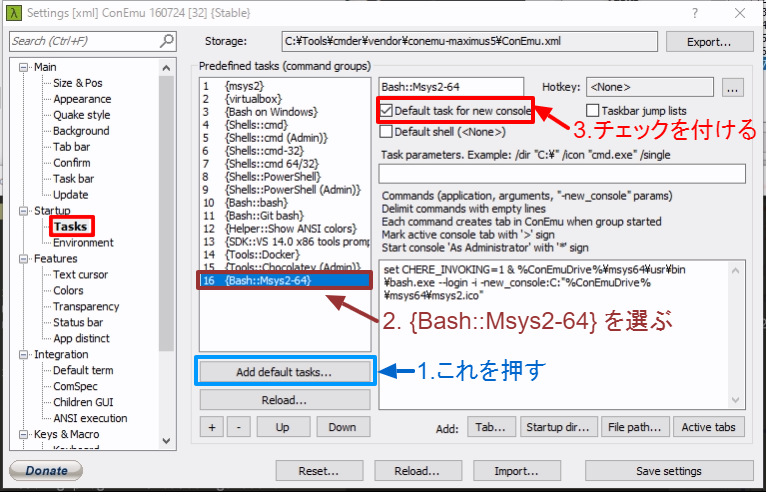
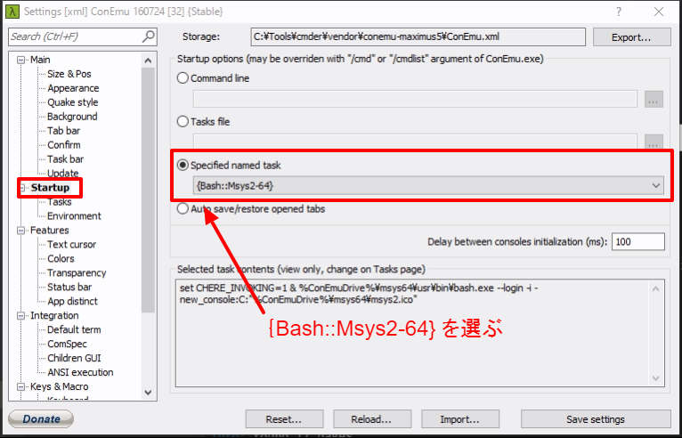
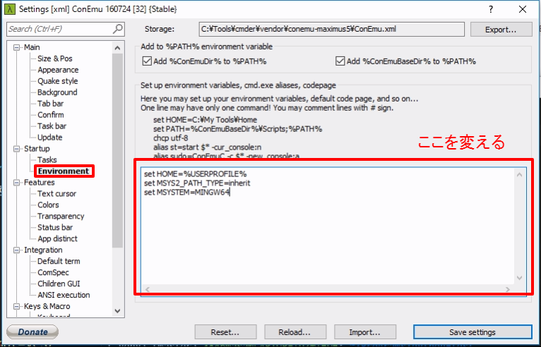

環境構築 | MSYS2
インストール
http://msys2.github.io/ から
msys2-x86_64-XXXXXXXX.exe （X はバージョン番号）を
ダウンロードします．
実行してインストールしますが，
最後の Run MSYS2 now はチェックを外してください．
Cmder で使えるようにする
次の手順で設定します．
- 設定画面を出す
- タイトルバー右クリック
- Settings
- Startup - Tasks
Add default tasksボタンで自動作成{Bash::Msys2-64}を選ぶDefault task for new consoleにチェックを付ける
- 設定画面を切り替える
- Startup - Environment
Set up environment variablesに次のように書くset HOME=%USERPROFILE% set MSYS2_PATH_TYPE=inherit set MSYSTEM=MINGW64
- 設定画面を切り替える
- Startup
{Bash::Msys2-64}を選ぶ- Cmder を再起動する
  
MSYS2 の設定
$ から 次の $ までが1つのコマンドです（$ は含みません）．
# 設定ファイルのコピー
$ cp /c/msys64/home/${USER}/.* ${HOME}
# force_color_prompt
$ sed -i ~/.bashrc -e 's/#force_color_prompt=yes/force_color_prompt=yes/'
# ~/.bash_aliases の設定
$ cat <<'EOL' >> ~/.bashrc
if [ -f "${HOME}/.bash_aliases" ]; then
source "${HOME}/.bash_aliases"
fi
EOL
$ echo "alias ls='ls --color=auto --ignore={ntuser*,NTUSER*}'" >> ~/.bash_aliases
$ exec $SHELL -l